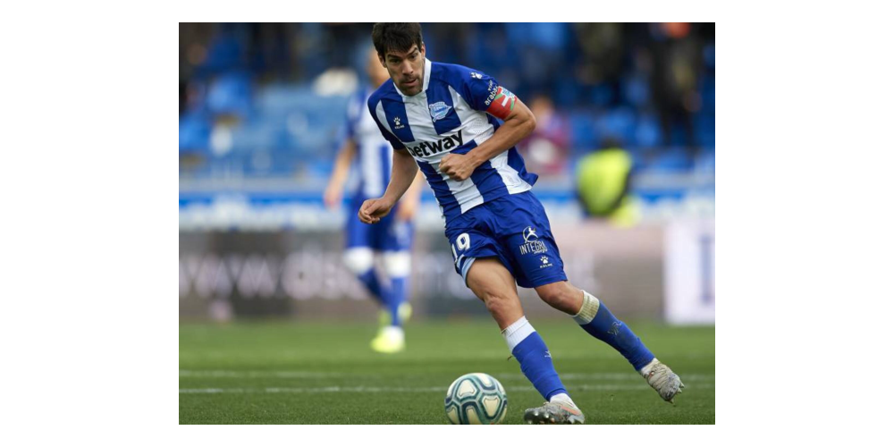

LaLiga: equipos y leyendas
Una página sobre los clubes y los jugadores que forman su historia.
LaLiga: equipos y leyendas
Una página sobre los clubes y los jugadores que forman su historia.
Leyenda del Deportivo Alavés



Manuel Alejandro García Sánchez, conocido como Manu García, es un centrocampista español nacido en Vitoria-Gasteiz en 1986 y uno de los capitanes más representativos del Deportivo Alavés. Su vínculo con el club comenzó como aficionado de Mendizorroza. Llegó como jugador en 2012 y permaneció nueve temporadas, hasta 2021. Con el dorsal 19 recorrió el camino desde Segunda B hasta Primera y se convirtió en un símbolo de compromiso para la afición albiazul.
Marcó en el partido del ascenso a Primera de 2016 y también en el estreno del Alavés en aquella temporada de la máxima categoría.
Comenzó a jugar en el colegio San Viator y se formó en la Real Sociedad antes de pasar por el Real Unión, el Eibar y la UD Logroñés. Su primera campaña en el Alavés terminó con el ascenso a Segunda División en 2013. Tres años después participó en el regreso a Primera y marcó el primer gol ante el Numancia en el partido que aseguró el ascenso. Su rendimiento en mayo de 2016, con tres goles, le valió el premio al mejor jugador del mes de la Liga Adelante.
El estreno en Primera también dejó un momento inolvidable: marcó el empate frente al Atlético de Madrid en el Vicente Calderón en agosto de 2016. En ese mismo estadio disputó con el Alavés la final de la Copa del Rey de 2017, culminación de una campaña histórica. Al cerrar su etapa albiazul en 2021 acumulaba 308 partidos oficiales y 19 goles. Esas cifras resumen nueve temporadas de liderazgo y una trayectoria ligada a los ascensos, la consolidación en la élite y algunos de los encuentros más recordados por Mendizorroza.